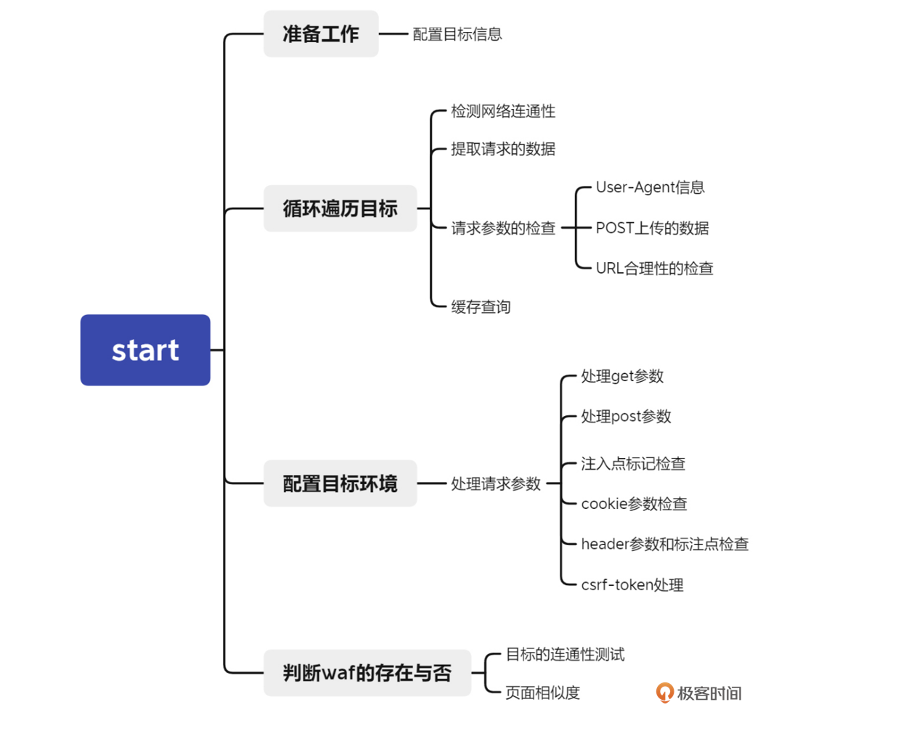
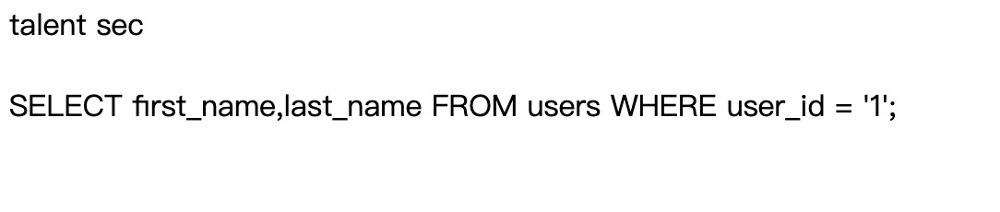
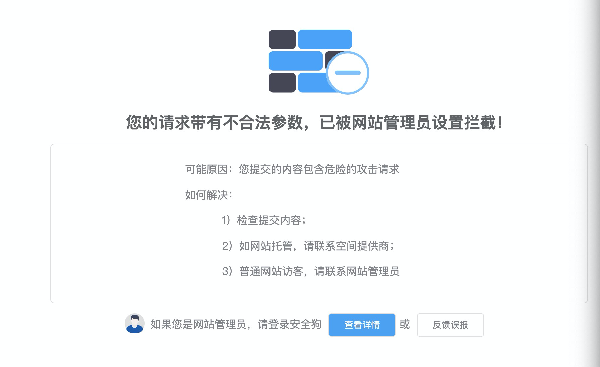

- 00 导读 解读OWASP Top10 2021.md
- 00 开篇词 从黑客的视角找漏洞，从安全的角度优雅coding.md
- 01 失效的访问控制：攻击者如何获取其他用户信息？.md
- 02 路径穿越：你的Web应用系统成了攻击者的资源管理器？.md
- 03 敏感数据泄露：攻击者如何获取用户账户？.md
- 04 权限不合理：攻击者进来就是root权限？.md
- 05 CSRF：为什么用户的操作他自己不承认？.md
- 06 加密失败：使用了加密算法也会被破解吗？.md
- 07 弱编码：程序之间的沟通语言安全吗？.md
- 08 数字证书：攻击者可以伪造证书吗？.md
- 09 密码算法问题：数学知识如何提高代码可靠性？.md
- 10 弱随机数生成器：攻击者如何预测随机数？.md
- 11 忘记加“盐”：加密结果强度不够吗？.md
- 12 注入（上）：SQL注入起手式.md
- 13 注入（下）：SQL注入技战法及相关安全实践.md
- 14 自动化注入神器（一）：sqlmap的设计思路解析.md
- 15 自动化注入神器（二）：sqlmap的设计架构解析.md
- 16 自动化注入神器（三）：sqlmap的核心实现拆解.md
- 17 自动化注入神器（四）：sqlmap的核心功能解析.md
- 19 失效的输入检测（上）：攻击者有哪些绕过方案？.md
- 20 失效的输入检测（下）：攻击者有哪些绕过方案？.md
- 21 XSS（上）：前端攻防的主战场.md
- 22 XSS（中）：跨站脚本攻击的危害性.md
- 23 XSS（下）：检测与防御方案解析.md
- 24 资源注入：攻击方式为什么会升级？.md
- 25 业务逻辑漏洞：好的开始是成功的一半.md
- 26 包含敏感信息的报错：将安全开发标准应用到项目中.md
- 27 用户账户安全：账户安全体系设计方案与实践.md
- 28 安全配置错误：安全问题不只是代码安全.md
- 29 Session与Cookie：账户体系的安全设计原理.md
- 30 HTTP Header安全标志：协议级别的安全支持.md
- 31 易受攻击和过时的组件：DevSecOps与依赖项安全检查.md
- 32 软件和数据完整性故障：SolarWinds事件的幕后⿊⼿.md
- 33 SSRF：穿越边界防护的利刃.md
- 34 Crawler VS Fuzzing：DAST与机器学习.md
- 35 自动化攻防：低代码驱动的渗透工具积累.md
- 36 智能攻防：构建个性化攻防平台.md
- 大咖助场 数字证书，困境与未来.md
- 春节策划（一） 视频课内容精选：Web渗透测试工具教学.md
- 春节策划（三） 一套测试题，看看对课程内容的掌握情况.md
- 春节策划（二） 给你推荐4本Web安全图书.md
- 结束语 无畏前行.md
15 自动化注入神器（二）：sqlmap的设计架构解析
你好，我是王昊天。
在上节课中，我们认识了一款自动化注入测试工具sqlmap，并对它的初始化过程有了深入了解。在完成了初始化之后，大部分软件就会开始进入正式的工作流程了，而这节课，我们就将开始学习sqlmap的工作流程。
在介绍sqlmap的工作流程之前，你可以先思考一个问题，我们平时是如何进行SQL注入测试的？如果让你来设计一个自动化注入测试工具，将平时手动实现的SQL注入测试步骤转化为机器的自动化实现，会遇到什么困难吗？
自动化注入的主要难点与人工注入会有一些差异，比如，人工很容易判断目标是否受到waf保护，也可以更好地观测注入结果，而让机器做同样的事情，则是一件不容易的事情。
对于人工而言，你可以发送一个容易被waf拦截的payload，通过这样的方式来观察页面的响应，进而判断waf是否存在。可是机器要如何实现呢？相信学完这篇课程，你可以解决这个问题。
在上一节课中，我们对sqlmap.py中的main函数进行了拆解，具体分析了init函数的主要功能，而init函数之后，就是start函数 。所以在这节课程中，我们会接着上一节课的内容，继续分析sqlmap.py中的main函数，主要讲解start函数实现的功能和方法。
start函数
在系统运行完sqlmap的初始化流程后，就会进入到start函数中，也就是我们这节课需要学习的主要内容。为了方便大家理解，可以将它主要分为四个部分，即准备工作、循环遍历目标、处理输入参数，以及判断waf的存在。
这是我绘制的一幅start函数拆解图，图中解释了四个部分分别做了哪些工作。

为了让你更好的理解start函数的功能，下面我们一起来看看start函数的内容。
@stackedmethod
def start():
"""
This function calls a function that performs checks on both URL
stability and all GET, POST, Cookie and User-Agent parameters to
check if they are dynamic and SQL injection affected
"""
# 这个配置并没有体现在命令行上，属于测试功能，可忽略。
if conf.hashFile:
crackHashFile(conf.hashFile)
if conf.direct:
initTargetEnv()
setupTargetEnv()
action()
return True
# 这个配置设定url和爬虫深度。
if conf.url and not any((conf.forms, conf.crawlDepth)):
kb.targets.add((conf.url, conf.method, conf.data, conf.cookie, None))
if conf.configFile and not kb.targets:
errMsg = "you did not edit the configuration file properly, set "
errMsg += "the target URL, list of targets or google dork"
logger.error(errMsg)
return False
if kb.targets and isListLike(kb.targets) and len(kb.targets) > 1:
infoMsg = "found a total of %d targets" % len(kb.targets)
logger.info(infoMsg)
targetCount = 0
initialHeaders = list(conf.httpHeaders)
for targetUrl, targetMethod, targetData, targetCookie, targetHeaders in kb.targets:
# 这个配置输出目标数量信息。
targetCount += 1
try:
if conf.checkInternet:
infoMsg = "checking for Internet connection"
logger.info(infoMsg)
这里你可以结合代码中的注释进行阅读，接下来我们会详细展开start函数的每一部分，因此这里你只需要对start函数的行为有个大概了解即可。
准备工作
start函数首先会进行一些针对目标的配置工作，配置结束之后，程序将开始利用for循环对每一个目标进行特定的操作，包括，检测网络的连通性，检测是否使用随机UA信息、是否配置post数据、提取检测参数、以及过滤用户排除的目标等。
下面让我们逐一观察它们对应的代码结构，来帮助你加深理解。
循环遍历目标
首先，是用for循环处理每一个目标的代码，可以看到for循环处理目标的代码中，包含了对网络连通性的测试。
for targetUrl, targetMethod, targetData, targetCookie, targetHeaders in kb.targets:
targetCount += 1
try:
# 网络连通性测试
if conf.checkInternet:
infoMsg = "checking for Internet connection"
logger.info(infoMsg)
if not checkInternet():
warnMsg = "[%s] [WARNING] no connection detected" % time.strftime("%X")
dataToStdout(warnMsg)
valid = False
for _ in xrange(conf.retries):
if checkInternet():
valid = True
break
else:
dataToStdout('.')
time.sleep(5)
if not valid:
errMsg = "please check your Internet connection and rerun"
raise SqlmapConnectionException(errMsg)
else:
dataToStdout("\n")
conf.url = targetUrl
conf.method = targetMethod.upper().strip() if targetMethod else targetMethod
conf.data = targetData
conf.cookie = targetCookie
conf.httpHeaders = list(initialHeaders)
conf.httpHeaders.extend(targetHeaders or [])
接下来系统会开始提取一系列数据，这些数据会在HTTP请求中用到，包括请求的网址、cookies信息等。
conf.url = targetUrl
conf.method = targetMethod.upper().strip() if targetMethod else targetMethod
conf.data = targetData
conf.cookie = targetCookie
conf.httpHeaders = list(initialHeaders)
conf.httpHeaders.extend(targetHeaders or [])
完成了数据提取，系统会检查请求参数，这个步骤会分为3个子步骤，分别是配置随机的User-Agent信息、判断用户是否指定了用POST方式上传的数据、以及对目标的url进行合理性检查。
# 配置随机UA信息
if conf.randomAgent or conf.mobile:
for header, value in initialHeaders:
if header.upper() == HTTP_HEADER.USER_AGENT.upper():
conf.httpHeaders.append((header, value))
break
# ...
# 判断是否指定了POST数据
if conf.data:
# Note: explicitly URL encode __ ASP(.NET) parameters (e.g. to avoid problems with Base64 encoded '+' character) - standard procedure in web browsers
conf.data = re.sub(r"\b(__\w+)=([^&]+)", lambda match: "%s=%s" % (match.group(1), urlencode(match.group(2), safe='%')), conf.data)
conf.httpHeaders = [conf.httpHeaders[i] for i in xrange(len(conf.httpHeaders)) if conf.httpHeaders[i][0].upper() not in (__[0].upper() for __ in conf.httpHeaders[i + 1:])]
# ...
# URL合理性检查
initTargetEnv()
parseTargetUrl()
完成这部分工作之后，sqlmap会有一个魔法操作，如果你理解了sqlmap的工作原理，就可以很容易理解这个魔法操作了，但如果你不理解，它一定会带给你不少痛苦，这个魔法操作就是缓存检查。
sqlmap会判断当前的查询在缓存中是否存在，如果存在，就说明sqlmap之前已经进行过同样的检查了，这时它就会跳过当前的检查目标；如果当前查询不存在，才会执行SQL注入攻击。我就曾经对同一目标执行多次SQL注入攻击，然后陷入了这个问题中，排查了很久才得以脱身。
if testSqlInj and conf.hostname in kb.vulnHosts:
if kb.skipVulnHost is None:
message = "SQL injection vulnerability has already been detected "
message += "against '%s'. Do you want to skip " % conf.hostname
message += "further tests involving it? [Y/n]"
kb.skipVulnHost = readInput(message, default='Y', boolean=True)
testSqlInj = not kb.skipVulnHost
if not testSqlInj:
infoMsg = "skipping '%s'" % targetUrl
logger.info(infoMsg)
continue
处理输入参数
此时，sqlmap会进入start函数内部的第四个步骤，也就是处理输入参数。除了设置一些存储信息和配置结果文件，还会针对性地处理一些请求数据，这部分的处理过程，会在setRequestParams函数中进行。
为了大家更好的理解_setRequestParams()这个函数，我在下面列出了它的部分代码，其中包括了它对请求参数get、post、注入点标记、cookie、header以及csrf-token的处理过程，大家可以结合代码中的注释，更加深入地理解这个函数，看看它是如何处理请求参数的。
def _setRequestParams():
# ...
# 检查请求的get参数，若有将它存储起来，供测试时使用。
if conf.parameters.get(PLACE.GET):
parameters = conf.parameters[PLACE.GET]
paramDict = paramToDict(PLACE.GET, parameters)
if paramDict:
conf.paramDict[PLACE.GET] = paramDict
testableParameters = True
# 检查请求的post参数，若有将它存储起来，供测试使用。
if conf.method == HTTPMETHOD.POST and conf.data is None:
logger.warn("detected empty POST body")
conf.data = ""
if conf.data is not None:
conf.method = conf.method or HTTPMETHOD.POST
# ...
conf.parameters[PLACE.POST] = conf.data
# ...
# 检查是否有get参数、post参数。
if re.search(URI_INJECTABLE_REGEX, conf.url, re.I) and not any(place in conf.parameters for place in (PLACE.GET, PLACE.POST)) and not kb.postHint and kb.customInjectionMark not in (conf.data or "") and conf.url.startswith("http"):
# 若没有找到get参数和post参数，系统会发出警告信息。
warnMsg = "you've provided target URL without any GET "
warnMsg += "parameters (e.g. 'http://www.site.com/article.php?id=1') "
warnMsg += "and without providing any POST parameters "
warnMsg += "through option '--data'"
logger.warn(warnMsg)
message = "do you want to try URI injections "
message += "in the target URL itself? [Y/n/q] "
# ...
# 循环检查目标是否有注入点标记参数。
for place, value in ((PLACE.URI, conf.url), (PLACE.CUSTOM_POST, conf.data), (PLACE.CUSTOM_HEADER, str(conf.httpHeaders))):
if place == PLACE.CUSTOM_HEADER and any((conf.forms, conf.crawlDepth)):
continue
_ = re.sub(PROBLEMATIC_CUSTOM_INJECTION_PATTERNS, "", value or "") if place == PLACE.CUSTOM_HEADER else value or ""
if kb.customInjectionMark in _:
# ...
# 找到了注入点标记参数就将它存储在字典中，供后面测试使用。
conf.paramDict[place]["%s #%d%s" % (header, i + 1, kb.customInjectionMark)] = "%s,%s" % (header, "".join("%s%s" % (parts[j], kb.customInjectionMark if i == j else "") for j in xrange(len(parts))))
# 检查是否有cookie参数，若有就将它存储起来，供后面测试使用。
if conf.cookie:
conf.parameters[PLACE.COOKIE] = conf.cookie
paramDict = paramToDict(PLACE.COOKIE, conf.cookie)
if paramDict:
conf.paramDict[PLACE.COOKIE] = paramDict
testableParameters = True
# ...
# 检查是否有header参数，若有就将它存储起来，供后面测试使用。
if conf.httpHeaders:
for httpHeader, headerValue in list(conf.httpHeaders):
# Url encoding of the header values should be avoided
# Reference: http://stackoverflow.com/questions/5085904/is-ok-to-urlencode-the-value-in-headerlocation-value
if httpHeader.upper() == HTTP_HEADER.USER_AGENT.upper():
conf.parameters[PLACE.USER_AGENT] = urldecode(headerValue)
# ...
# 检查csrf token参数。
#当csrf token参数存在。
if conf.csrfToken:
# 检查get、post、cookie、header values参数中是否有anti-csrf token参数。（anti-csrf token是一个用来防止跨站请求伪造设置的参数。）
if not any(re.search(conf.csrfToken, ' '.join(_), re.I) for _ in (conf.paramDict.get(PLACE.GET, {}), conf.paramDict.get(PLACE.POST, {}), conf.paramDict.get(PLACE.COOKIE, {}))) and not re.search(r"\b%s\b" % conf.csrfToken, conf.data or "") and conf.csrfToken not in set(_[0].lower() for _ in conf.httpHeaders) and conf.csrfToken not in conf.paramDict.get(PLACE.COOKIE, {}) and not all(re.search(conf.csrfToken, _, re.I) for _ in conf.paramDict.get(PLACE.URI, {}).values()):
errMsg = "anti-CSRF token parameter '%s' not " % conf.csrfToken._original
errMsg += "found in provided GET, POST, Cookie or header values"
# 如果这些参数中都没有anti-csrf token参数，那么系统会报错。
raise SqlmapGenericException(errMsg)
# 当csrf token参数不存在。
else:
for place in (PLACE.GET, PLACE.POST, PLACE.COOKIE):
if conf.csrfToken:
break
# 判断注入点标记的参数是否需要csrf token信息。
for parameter in conf.paramDict.get(place, {}):
if any(parameter.lower().count(_) for _ in CSRF_TOKEN_PARAMETER_INFIXES):
message = "%sparameter '%s' appears to hold anti-CSRF token. " % ("%s " % place if place != parameter else "", parameter)
message += "Do you want sqlmap to automatically update it in further requests? [y/N] "
if readInput(message, default='N', boolean=True):
class _(six.text_type):
pass
# 设置csrf token参数。
conf.csrfToken = _(re.escape(getUnicode(parameter)))
conf.csrfToken._original = getUnicode(parameter)
break
检测waf
在完成上述步骤之后，sqlmap就完成了针对注入测试目标的参数配置工作。配置完参数后，sqlmap就可以开始连通性的检测了，通过这一步来判断目标是否可以访问。如果该目标无法连接上，那么sqlmap就会跳过对当前目标的检测；如果可以连接到目标，那么sqlmap就会开始判断该目标是否有waf保护。这是因为waf的存在会对sqlmap的SQL注入测试有很大的影响，所以sqlmap会在注入测试前，判断waf是否存在。
# 逐个目标判断。
for targetUrl, targetMethod, targetData, targetCookie, targetHeaders in kb.targets:
# ...
setupTargetEnv()
# 如果连接不上，跳过当前测试目标。
if not checkConnection(suppressOutput=conf.forms):
continue
# ...
# 如果可以连接上，判断目标是否存在waf。
checkWaf()
进入到checkWaf函数之后，大家可以结合我写的注释，对这个函数进行理解和学习。我们会发现，程序首先会从准备好的文件中，获取容易引起waf响应的代码片段组，然后结合之前设置的注入位置信息，将它组合成一个payload发送给目标。这样就可以获取到该payload响应的值，我们可以将这个值和正常的响应做比较，计算出页面相似度的值。
# 判断waf是否存在。
def checkWaf():
# ...
# 默认设置为没有waf，并且配置容易引起waf拦截的payload。
retVal = False
payload = "%d %s" % (randomInt(), IPS_WAF_CHECK_PAYLOAD)
# 根据注入点的位置，决定payload插入的位置，然后发送测试请求，获取响应的返回值。
if PLACE.URI in conf.parameters:
place = PLACE.POST
value = "%s=%s" % (randomStr(), agent.addPayloadDelimiters(payload))
else:
place = PLACE.GET
value = "" if not conf.parameters.get(PLACE.GET) else conf.parameters[PLACE.GET] + DEFAULT_GET_POST_DELIMITER
value += "%s=%s" % (randomStr(), agent.addPayloadDelimiters(payload))
# ...
try:
# 判断retVal即页面相似度和预设的阈值大小比较关系。
retVal = (Request.queryPage(place=place, value=value, getRatioValue=True, noteResponseTime=False, silent=True, raise404=False, disableTampering=True)[1] or 0) < IPS_WAF_CHECK_RATIO
except SqlmapConnectionException:
retVal = True
finally:
kb.matchRatio = None
# ...
if retVal:
# ...
message = "are you sure that you want to "
message += "continue with further target testing? [Y/n] "
# ...
return retVal
通过比较页面相似度的值和设定的阈值，sqlmap可以判定目标是否被waf保护。如果小于设定的阈值，则代表这两个页面的内容差别很大，sqlmap就会认定目标被waf保护，否则就会认为目标没有waf保护。
这里我们看到了另外一个非常重要的函数Request.queryPage和一个非常重要的概念，页面相似度。接下来，我们就来一起学习一下什么是页面相似度，而关于Request.queryPage的功能和页面相似度算法，我们会在下一讲详细学习。
页面相似度
页面相似度，简单来讲，就是两个页面内容相似程度的衡量系数。在sqlmap中，计算页面相似度主体使用的是difflib模块中的SequenceMatcher功能，该功能用于比较可哈希类型的序列的相似程度。可哈希类型序列指的是，不可变的数据结构例如字符串、元组等。
这里，我们用一个轻松的小例子，来加深你对页面相似度的理解。
import difflib
a='abcd'
b='ab123'
seq=difflib.SequenceMatcher(None,a,b)
d=seq.ratio()
print(d)
# d=0.44444444...
在这个例子里，我们用SequenceMatcher函数计算了字符串a和字符串b的相似度，计算的结果为“0.4444…”。
这个值是用“2_M/T”这个表达式计算出来的，要想得出结果，我们需要获得变量M和T的值。其中M为a和b相同部分的长度，在这个例子中，因为a和b相同部分为ab，所以M的 值就是2。T则是a和b的长度之和，所以T的值为9。因此，计算结果为“2_2⁄9=0.4444…”。
相信通过这个例子的学习，你已经可以掌握SequenceMatcher函数的用法，下面让我们趁热打铁，进入到实战训练中，来巩固我们对页面相似度的理解。
实战训练
通过刚才的学习我们知道，sqlmap会运用页面相似度来判断waf存在。为了让你有更加直观的感受，我们可以打开谜团中的“安全狗4.0靶场”进行实战测试。
打开靶场后，我们访问靶场80端口下的inject.php路径，这是一个有waf保护的网站，我们需要通过get方式，上传一个名为id的参数。
我们首先将id参数的值设为1，正常获得的响应内容如下：

随后我们将id的参数值设为容易被waf拦截的payload。
*1' and 1=2 union select database(),2 --+*
这样它就会被waf拦截

我们将这两个响应的内容进行记录，然后计算它们的页面相似度。
# 正常响应
talent sec<br /><br/>SELECT first_name,last_name FROM users WHERE user_id = '1';
# waf拦截的响应
您的请求带有不合法参数，已被网站管理员设置拦截!可能原因：您提交的内容包含危险的攻击请求。
计算发现他们的页面相似度为零，这符合我们的预期，即存在waf的拦截，那么使用payload前后的页面相似度就会较低。
总结
这节课，我们学习了sqlmap在工作流程中调用的一个重要的函数start，了解了它的功能和对应的实现方法。
秉持着“知其然，还要知其所以然”的理念，我们除了要知道sqlmap的使用方法，更要了解它的设计思想和工作原理。我们分析了它的源代码，了解到它具有很多功能，这些功能包括，循环处理针对目标配置、测试网络连通性、配置HTTP请求信息、以及判断waf是否存在。
由于判断waf是否存在较难理解，并且存在一个较为生僻的概念，页面相似度，所以我给你介绍了sqlmap是如何判断waf是否存在的。经过分析我们发现，sqlmap会使用易于引起waf拦截的payload来获取响应，并且将它和不使用payload的正常响应进行比较，通过它们的相似度来判断waf存在。如果页面相似度高，就认为目标没有waf的保护，否则我们就认为有waf的保护。最后，我们在实战中验证了这个想法，证实了sqlmap通过页面相似度判断waf存在的可行性。
截止到目前，你已经了解了sqlmap的初始化流程，和针对每个测试目标的配置和检测步骤，下节课，我们将会更加深入地剖析sqlmap的页面相似度算法，并且会正式为你讲解SQL注入测试之前的必经步骤–启发式注入测试。
思考
页面相似度判断的阈值应该与哪些因素相关呢？
欢迎在评论区留下你的思考，我们下节课再见。
© 2019 - 2023 Liangliang Lee. Powered by gin and hexo-theme-book.